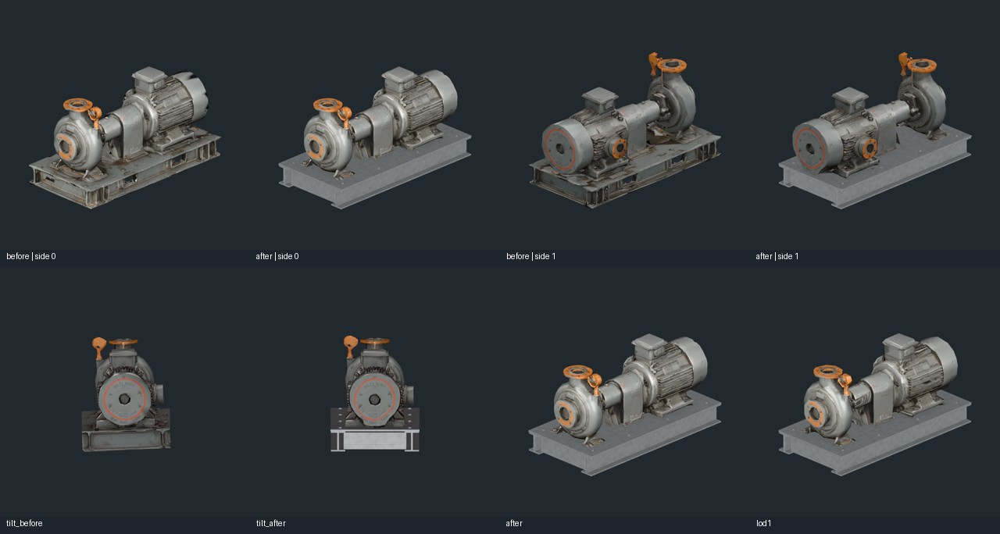
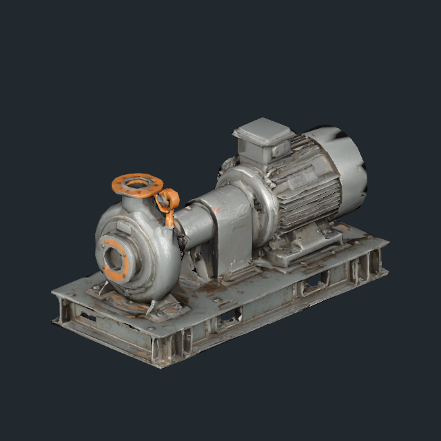
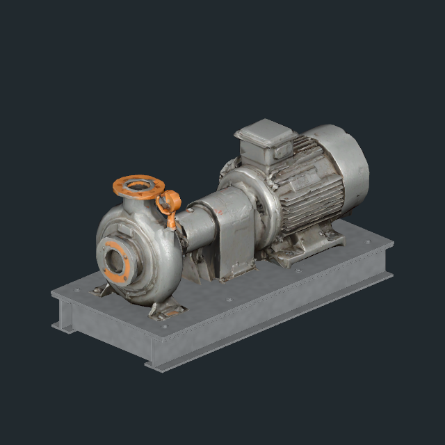
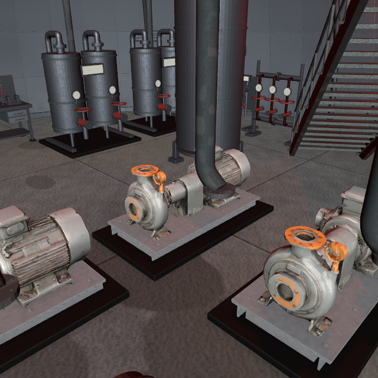

모터 방열핀 후속 재제작: 이 단계에는 찌그러진 방열핀 형상이 남아 있었다. 사용자 스크린샷을 기준으로 해당 모터 구간을 다시 제작했다. 최신 확대 전후 비교를 확인한다.
2026-11-11 · 송예찬
앞선 검수에서 펌프의 회전 방향만 확인하고 보수에서 제외한 판단을 정정한다. 사용자 지적 후 선택된 E01 펌프를 확인해 모터 뒤 덮개 갈라짐과 받침대 뒤틀림을 보수했다. C02 세 번째 펌프의 LOD0만 약2도 기울었던 별도 문제도 확인해 바로잡았다.
B2 C02 5개·E01 3개·E03 2개, 총10개에 적용·저장. 원본 본체와 UV/재질은 유지하고 받침대를 수평 상판·레일·보강재·체결부로 제작했다. 모터 덮개를 중심축에 맞추고 면 방향·노멀을 정리했다.
위: 양쪽 면의 수정 전/후. 아래: C02 기울기 수정 전/후, E01 LOD0/LOD1. 검수용 임시 조명.



주변 설비·기존 서비스 배관과 함께 본 수정 후 화면. 편집 검수용 조명을 사용했다.

| 항목 | 결과 |
|---|---|
| 루트 위치·회전·크기 / 충돌체 | 194 / 194 보존 |
| 수정 펌프 LOD 참조 | 10개 × 2단계 정상, 회전 차이0도 |
| 접지 | 모델 하단 Y=-34.000m, C02 기울기 때문에 내려갔던 약36mm 복구 |
| 메시 | 정점 접합 기준 열린 경계·과잉 연결·퇴화 면0, Unity 반입 후 빈 메시0 |
| 삼각형 | LOD0 10,000 / LOD1 4,000 — 기존 수량 유지 |
| 추가 파일 | 공유 FBX1개 0.58MiB, 재질1개. 신규 텍스처0, Read/Write 꺼짐 |
받침대에 별도 재질 슬롯1개를 사용하므로 펌프당 재질 패스가1개 증가한다. 런타임 스크립트는 추가하지 않았다. 보호 파일100개 중 B2 씬만 변경됐으며 다른 층·Player·Animator·이전3종 보수와 원본 모델/GUID는 유지했다. 커밋·push는 하지 않았다. 전체 다른 층의 펌프 검수나 빌드 성능 검증 완료를 의미하지 않는다.
제작·적용·검증 원본은 SourceAssets/CoolingPumpRepair/. Apply는 이미 적용되어 재실행하지 않는다. 보수 직전 씬 백업은 Documents/Codex/Backups/AfterSeconds_CoolingPump_20261111에 있다.